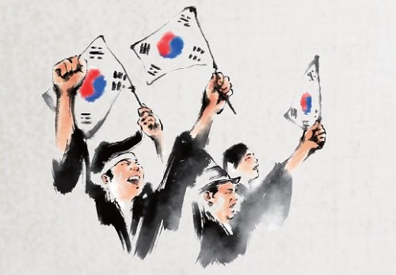
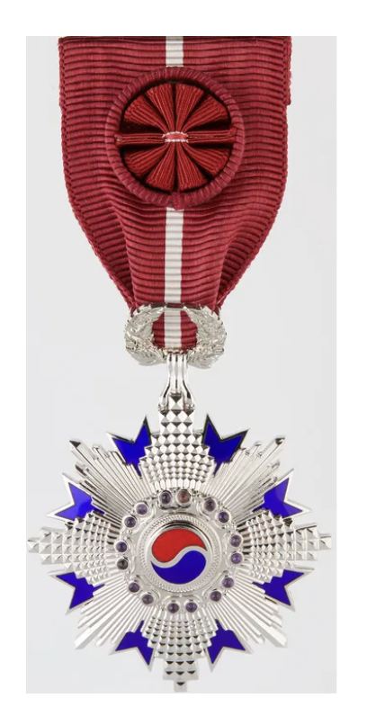

National건국포장
Foundation Honor
What is National Foundation Honor:건국포장이란?
Honor awarded to A person who has distinguished himself or herself by his or her dedication and efforts in establishing the foundation of the Republic of Korea and the nation.대한민국과 국가의 기틀을 세우는 데 헌신하고 노력하여 뚜렷한 공적을 세운 사람에게 수여하는 포장입니다.
